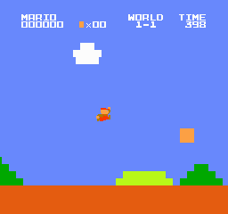
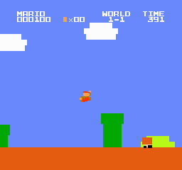
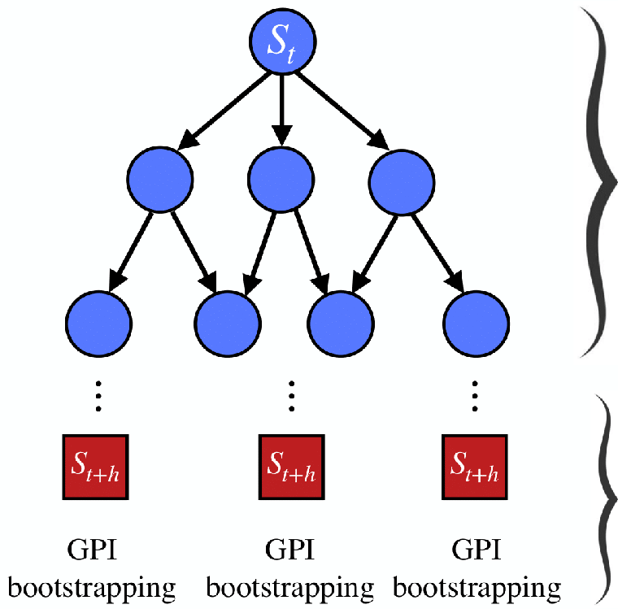
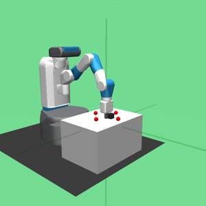
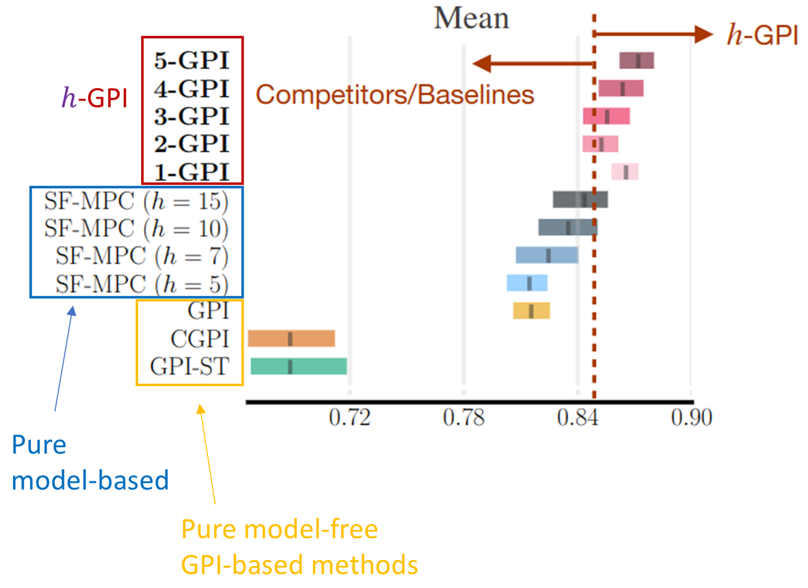

Sample-Efficient Multi-Task and
Multi-Objective Reinforcement Learning
by Combining Multiple Behaviors
Advisor: Ana L. C. Bazzan
Co-advisor: Bruno C. da Silva
The Real World is Multi-Objective

PhD (2021 – 2025)

- Advisors:
- Prof. Ana Bazzan
- Prof. Bruno C. da Silva (Univ. of Massachusetts)
- Thesis: “Sample-Efficient Multi-Task and Multi-Objective Reinforcement Learning by Combining Multiple Behaviors”
Hypothesis:
It is possible to combine the foundations and ideas of
Multi-Task RL (MTRL) and Multi-Objective RL (MORL)
to address this research problem.
Learning and Combining Behaviors
We introduce novel multi-policy methods that enable RL agents to:
- Learn multiple behaviors
- each specialized in a task or in a preference over objectives
\Pi =
\pi_1

\pi_2

…
\pi_n

- Combine previously-learned behaviors
- to quickly identify solutions to new tasks
\Pi
+
new task
zero-shot
transfer
new behavior

Combining Behaviors via GPI
\textcolor{#00B050}{\pi_1}
w = [1,0,0]

\textcolor{#0070C0}{\pi_2}
w = [0,1,0]

zero-shot
\pi^{GPI}(s;\textcolor{#ED7D31}{w}) \in \operatorname*{arg\,max}_{\textcolor{#C00000}{a}\in\mathcal{A}}\ \max_{\pi\in\{\textcolor{#00B050}{\pi_1},\textcolor{#0070C0}{\pi_2}\}} q^{\pi}_{\textcolor{#ED7D31}{w}}(s,\textcolor{#C00000}{a})
\textcolor{#ED7D31}{w} = [\textcolor{#00B050}{1},\textcolor{#0070C0}{1},0]

GPI Theorem
q^{GPI}_{\textcolor{#ED7D31}{w}}(s,a) \geq \max_{\textcolor{#0070C0}{\pi}\in\Pi} q^{\textcolor{#0070C0}{\pi}}_{\textcolor{#ED7D31}{w}}(s,a) \qquad \textit{for any } \textcolor{#ED7D31}{w} \in \mathcal{W}
Scaling GPI-LS to Image-Based Tasks
[Contrib. 2]
- MO Super Mario Bros.
- 4 objectives
Time vs. Killing Enemies

- Performance improves as the size of the ensemble of value functions increases
Contributions
[Contrib. 3] Novel method for zero-shot transfer of solutions
- First technique able to interpolate between model-free and model-based approaches
- Robust to approximate models of the system → bounded approximation errors guaranteed

h steps of planning with an approximate model
zero-shot GPI on states reachable in h steps
Training Tasks




zero-shot
Test Task
Multi-Step Generalized Policy Improvement by Leveraging Approximate Models (NeurIPS 2023)
Qualis A1
FetchPush – Zero-Shot Performance
[Contrib. 3]

h-GPI outperforms competitors for all values of h using a learned model
Requires a significantly shorter planning horizon
Acknowledgments

- Advisors
- Prof. Ana L. C. Bazzan (UFRGS)
- Prof. Bruno C. da Silva (UMass)
- Prof. Ann Nowé (VUB)
- Thesis Defense Committee
- Prof. Fredrik Heintz, Prof. Anderson Tavares, Prof. Patrick Mannion
- Collaborators and Colleagues
- Florian Felten, André Barreto, Diederik Roijers, Grégoire Danoy, Willem Röpke, Raphael Avalos, Mathieu Reymond, Florent Delgrange, Roxana Radulescu, Gabriel Ramos, Louis Bagot, Moritz Bächer & Disney Research Zürich, Farama Foundation, …
Sample-Efficient Multi-Task and
Multi-Objective Reinforcement Learning
by Combining Multiple Behaviors
Thank you!

39th CTD – CSBC 2026
July 22, 2026